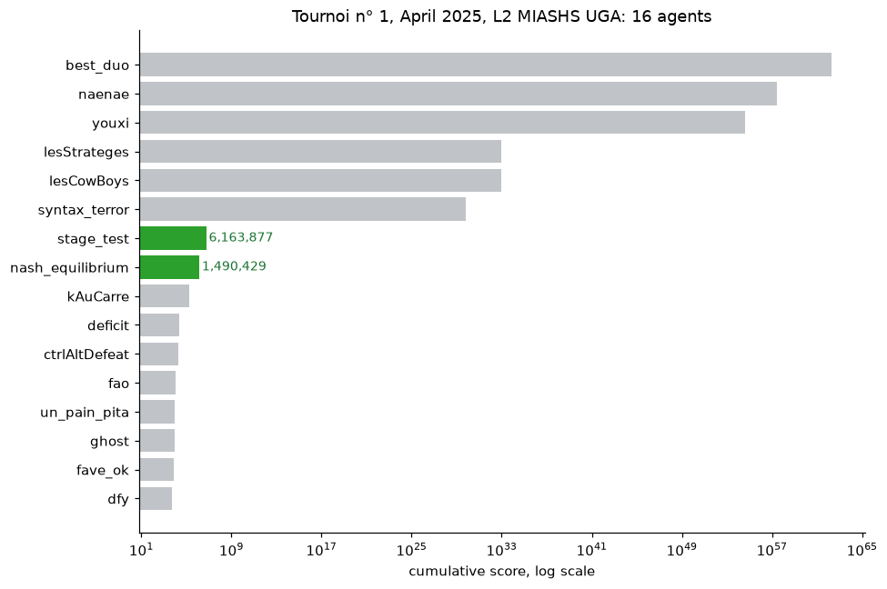

IA et tarification stratégique
Un stage de recherche au GAEL, de janvier à avril 2025.
Dans un jeu de prix répété, les joueurs humains convergent vers des prix tacitement collusifs plutôt que vers l'équilibre concurrentiel. Savoir si les algorithmes soutiennent ce comportement, le brisent ou l'intensifient est une question ouverte en économie industrielle, aux conséquences directes pour la politique de la concurrence. Encadré par Alexis Garapin (UGA) et Olivier Bonroy (INRAE) au Grenoble Applied Economics Laboratory.
Le stage ne tranche pas la question. Ce qu'il a produit est ci-dessous, avec les chiffres réellement atteints.
Le tournoi
7e et 8e sur 16, avril 2025, L2 MIASHS UGA

Le jeu : les deux joueurs choisissent simultanément un entier de 1 à 5. Si les choix diffèrent d'exactement un, celui qui a choisi le plus petit nombre prend la somme et l'autre rien ; sinon chacun marque ce qu'il a choisi. Sous-coter d'une unité est récompensé, donc chaque nombre invite à être sous-coté.
stage_test marque 6 163 877 et nash_equilibrium
1 490 429. Cet ordre est celui que prédit l'analyse d'équilibre. Le fait que
les deux perdent face à six agents adaptatifs l'est aussi, pour la raison
exposée dans la section suivante. Ce classement se trouvait page 1 d'un
journal de 636 pages.
L'équilibre
Bat Nash en tête-à-tête, 3,5552 contre 3,1521

Le résultat en tête-à-tête tient et se reproduit exactement. Il n'a rien de surprenant une fois énoncé correctement, car Nash est un concept de sécurité qui garantit un plancher face à n'importe quel adversaire, et non un concept de maximisation.
La distinction que l'analyse d'origine ne faisait pas est à droite. Devancer un adversaire n'est pas maximiser son propre gain : cette stratégie gagne le match en coûtant plus à l'adversaire qu'elle ne se coûte à elle-même. C'est raisonnable en tête-à-tête et inadapté à un tournoi qui compte des points cumulés, ce qui est précisément où elle finit 7e.
La dérivation a été refaite. L'originale minimisait le gradient de gain au carré, ce qui sur un simplexe revient à demander que chaque action rapporte zéro, donc à chercher les stratégies qui rapportent le moins. La condition employée maintenant est que le regret soit nul pour les deux joueurs, vérifiée sur la bataille des sexes et le dilemme du prisonnier avant de toucher au vrai jeu.
L'imitation comme mise à jour de poids
Le Tit-for-Tat sans que personne ne le programme


Les neurones miroirs s'activent aussi bien quand on agit que quand on observe quelqu'un agir, ce qui en fait un substrat plausible de l'imitation. L'agent est cette idée au plus simple : observer une action multiplie son poids puis renormalise. Rien ne lui dit de rendre la pareille.
Comment le dépôt est organisé
Deux couches. Tout ce qui a été rendu en mai 2025 est conservé dans
original/ octet pour octet, y compris ce qui est faux, que ce
dossier recense. Les corrections sont posées à côté plutôt que par-dessus.
Elles ne renversent pas les conclusions du stage. Le résultat en tête-à-tête tient. Ce qui change, c'est que la dérivation a été refaite avec une condition correcte sur un simplexe, que les affirmations non étayées par le code sont nommées, et que les résultats enfouis sont visibles.